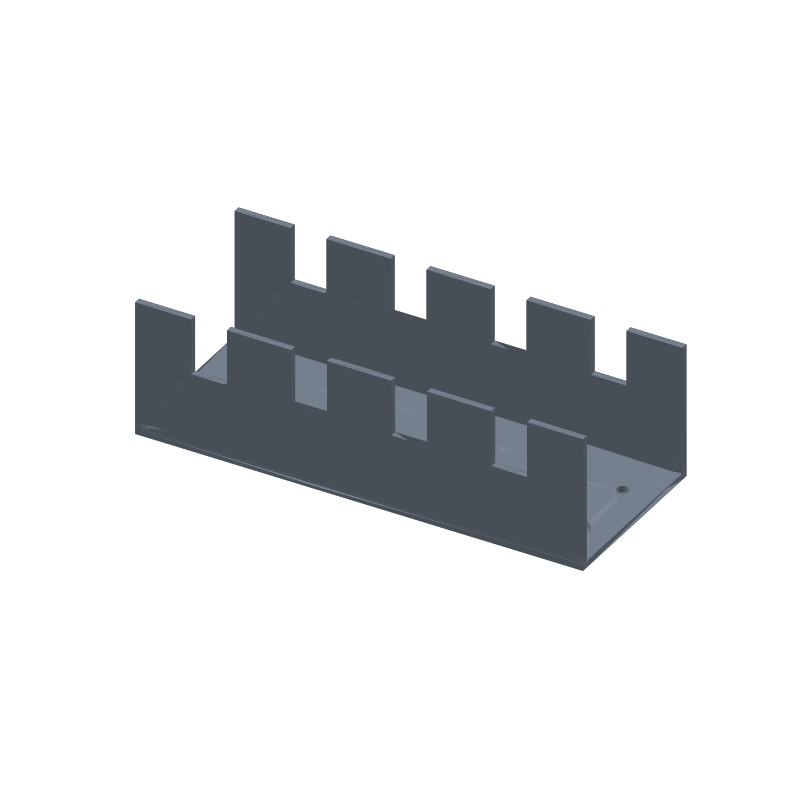

Under-desk cable tray STL, 200 × 80 × 60 mm, comb slots and screw mounts
Cables sag behind every desk: a power brick, a monitor lead and a couple of USB runs braided into one mess you have to untangle by feel. This tray screws to the underside of the desk and gives the run a home. Eight comb slots, four per side wall, hold the cables separated, and any single cable lifts up and out of its slot without unplugging anything at either end.
The channel runs the full 200 mm with both ends open, so a long cable can enter one end and leave the other along the desk edge. Four 5 mm holes in the floor near the ends take the mounting screws, and the floor around them is a solid 3 mm slab. Walls and floor are 3 mm everywhere: nothing needs support, and the whole tray prints open side up on a flat plate.
This page carries the measured spec sheet: dimensions taken from the exported mesh, every edge counted, the volume cross checked against an analytic sum, and preview renders, so you can check the numbers before you slice.

The STL is one material and prints in one color; the renders shade the walls by light angle so the comb slots and the open channel read as geometry, not paint.
Spec sheet, measured from the mesh
| Spec | Value |
|---|---|
| As exported | One connected open-top U-channel tray 200 × 80 × 60 mm, both ends open |
| Comb slots | Eight rim notches, four per side wall, 16.0 mm design width (ray scan at 0.25 mm step measured 16.0 and 16.25; the analytic layout puts all four at exactly 16.0) |
| Slot layout | Front wall openings at x 25.0 to 41.0, 69.5 to 85.8, 114.2 to 130.5 and 159.0 to 175.0; four rising edges mirrored on the back wall |
| Slot depth | 25.0 mm below the rim on all eight slots (ray measured) |
| Mount holes | Four 5 mm through-holes in the floor at x 14, y 25 / 14, 55 / 186, 25 / 186, 55; a ray down each hole axis exits the mesh, 4 of 4 through |
| Floor | 3 mm solid on all six probes, one beside each hole and two mid tray (ray verified at z 1.5) |
| End segments | 25 mm solid at each end (ray spans 0.5 to 25.0 and 175.0 to 199.2, probes start 0.5 mm inside the bounds) |
| Volume | 106.57 cm³ mesh vs 106564.38 mm³ analytic, delta 0.000632%, ≈ 132 g PLA solid, less at typical infill |
| Flat on one plate, open top, vertical walls only, rim notches and through-holes cut clean, no supports, no bridges | |
| Mesh check | Watertight, winding consistent, euler -6, genus 4 (the four screw holes), one body, 956 faces, 472 vertices, all 1434 edges shared by exactly 2 faces (trimesh 5.1.0, 2026-09-10) |
| Files | STL (47 KB) and 3MF (10 KB) plus the parametric generator script gen_cabletray30.py |
| Params | length 200, depth 80, height 60, wall 3, floor_t 3, slot_n 4 (3 to 5), slot_w 16 (12 to 20), slot_depth 25, end_margin 25, hole_d 5, hole x 14 / 186, y 25 / 55 |
| License | CC-BY 4.0 on MakerWorld; royalty free, no AI training, direct from us |
How the tray was verified
The generator extrudes the U profile (a floor strip and two wall strips) the full 200 mm, so the channel is watertight by construction, then cuts the eight comb slots and the four screw holes with a manifold boolean. Every cutter pierces past both faces of the solid or sits fully inside it, so nothing shares a plane with the tray. The script asserts watertight, winding consistent, one body, and an euler number of exactly -6 before it writes anything: -6 is 2 minus twice the genus, and the genus 4 comes from the four screw holes. It also checks the cross sections: 5 loops at floor height (the outline plus the four holes) and 2 loops at mid height (the two walls).
The shipped STL loads back with merged vertices as watertight, winding consistent, euler -6, genus 4, one body, is_volume true. The edge census counts 1434 edges and every one of them is shared by exactly 2 faces: zero non-manifold edges anywhere in the mesh.
The features were ray scanned on the reloaded mesh. Casting down the mid-thickness of the front wall in 0.25 mm steps finds four openings, 16.0 and 16.25 mm wide at the step quantization (the analytic layout puts all four at exactly 16.0 mm), with 25.0 mm of depth below the rim on each. The back wall mirrors the front with four rising edges. A ray down the axis of each of the four screw holes passes clean through with zero intersections, and six floor probes, one beside each hole and two mid tray, all land inside the solid at z 1.5: the floor is continuous, not a false bottom.
The volume cross checks two ways. Trimesh measures 106565.05 mm³ on the mesh. An independent sum from the 2D profile, 582 mm² of U section times 200 mm, minus the eight slots 9600 mm³ and the four screw holes 235.62 mm³, comes to 106564.38 mm³. The two agree to 0.000632%, far inside the 1% gate.
Print notes
Print the file as exported, flat on the plate, open side up: vertical walls, rim notches, through-holes, so the slicer needs no supports and no brim beyond plate adhesion. 0.2 mm layers and three perimeters are a reasonable default; the walls are 3 mm, so three perimeters fill them without infill walls.
I have not test-printed this yet. If you print it, tell me how the slots treat your cable mix. The knobs are in the generator: length, depth, height, wall, floor_t, slot_n, slot_w, slot_depth, end_margin, hole_d and the hole positions.
Change any of those and rerun gen_cabletray30.py: slot positions, gaps and holes recompute from the parameters, and the script refuses to write an STL if the slot count leaves a gap under 10 mm, if a hole comes within 3 mm of a wall or lands under a slot, or if the reload fails the one body, watertight, euler -6 checks. A 300 mm tray or five slots per wall is a number change, not a redesign.
Honest limits
The tray is mesh verified but untested on a printer, and the screw fit is the modeled 5 mm hole, not a fit check against real hardware. If an M5 pan head binds, drill the hole 0.5 mm oversize or print a quick two-layer washer test before committing the full tray.
The 16 mm slots hold single cable runs and small bundles. A fat HDMI plug next to a power brick can want more room: raise slot_w toward the 20 mm limit in the generator and rerun. The slots are 25 mm deep, so light cables can slide along inside the channel and lift out at any slot.
PLA is fine under a normal desk, but a tray bolted above a warm PC case or a radiator can creep it. For those mounts, print the same generator output in PETG.
Where to get the files
The under-desk cable tray is staged on our MakerWorld account and goes public on our profile once it is submitted and clears review.
More printed organizers and bench tools, with a status table for the pool: 3D printed desk organizers and printable tools. The rebuild-everything approach, generator parameters per model side by side: parametric 3D printed tools.
FAQ
Will my cables fit the comb slots?
The slots are 16 mm wide and 25 mm deep below the rim, four per side wall. Single cable runs and small bundles drop in with room to slide; any cable lifts up and out of its slot without unplugging the ends. A thick plug or a power brick bundle can want slot_w raised toward the 20 mm limit in the generator.
How does it mount under the desk?
Four 5 mm through-holes in the floor, 25 mm in from each end, one pair at y 25 and one at y 55. Pan-head M5 screws, or #10 screws with a small washer, go up through the tray into the desk underside. The floor is a solid 3 mm slab around every hole, verified by ray probes on the mesh, so the screws bite printed plastic the whole way.
Does it print without supports?
Yes. The tray is open top and every surface is either flat on the plate or a vertical wall. The comb slots are notches open at the rim, the screw holes pierce the floor, and nothing floats or bridges. The euler count of -6 encodes exactly the four holes, which is the whole topology: no hidden overhangs, nothing the slicer has to catch.